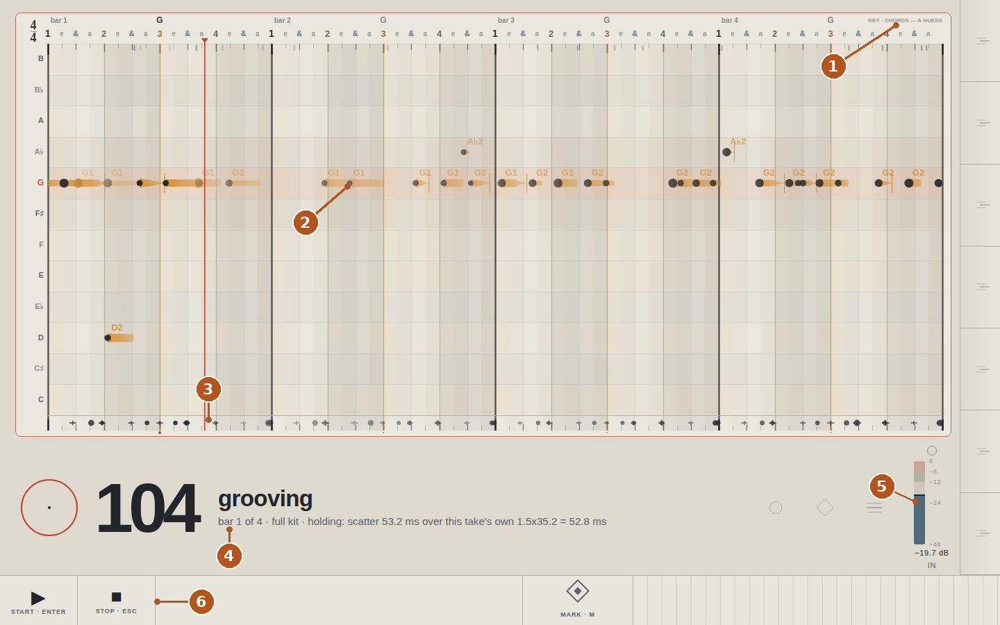
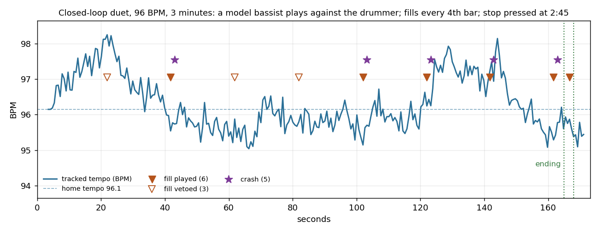

Project summary · 2026-11-01 · working repository kept private
sideman: a drummer that plays with my bass
A real-time drum accompanist on a Jetson AGX Orin: bass DI in, drums out, every session replayable bit for bit so that musical questions get numerical answers.
The problem I wanted to solve
Practising bass alone means playing to a click, a fixed backing track, or to nothing. A drummer does something a click cannot: locks onto the pulse, predicts where the next beat will land, commits a hit slightly before it and corrects continuously. I wanted that drummer on my desk, listening to a DI bass through a USB interface and playing a sampled kit, with every session logged by sample index so that any question ("why did it speed up at bar 30?") can be answered offline with numbers rather than opinions. Harmony was in the original plan — a partner that follows chords as well as pulse — and I cut it to drums only for this stage: the drummer has to be right before anything is built on top of it. The end goal is a partner that completes the band in any combination: a bassist and three guitarists with no drummer, or a practice room with one, two or more invisible musicians.
Demonstration
The panel, captured while a take of mine (recorded 2026-11-01) was fed back through the live audio path.

- Key and chords guessed by the listener from my audio alone (here G), labelled as a guess.
- My notes, named by pitch, drawn where they actually sit between the 16th-note ticks, with an attack head and an envelope body that fades with the note.
- What the drummer played, one lane under the bars.
- Tempo and the state in words: grooving, bar 1 of 4, full kit, and a falter hold with the measured scatter and its threshold, so the reason for every decision is on the screen.
- Input meter with the target band, so a bad gain is visible before a bad take.
- Transport, the marker key, and the hand brake (
[]\) that nudges the home tempo.
Two short clips from a closed-loop duet
A model bassist plays against the drummer at 96 BPM; bass at unity, drums at −6 dB.
- First fill and crash (12 s): the fill in the last bar of a phrase, then the crash on the downbeat.
- The ending (11 s): stop pressed; the drummer finishes the phrase with a fill, lands crash and kick on the one, and lets it ring.

Architecture and my contribution
bass DI → USB interface (48 kHz) → T0 audio callback (256 frames)
→ T1 control thread: onset front end → co-leading Kalman PLL (tempo, phase)
→ home-tempo spring + push absorber → falter / adapt detectors
→ controller: one bar ahead from a library of human grooves (GMD), fills, crash, ending
→ sampler → T0 output, every hit scheduled at t_grid + feel − output_latency
→ T2 logger: events.jsonl by sample index, bit-for-bit replayable
→ panel server: browser front panel (yardstick; listener: key, chords, notes)
This project runs as a three-role collaboration that I designed:
- I set the goals, make every musical decision by ear (co-leader tempo, when the drummer may comment, how long a phrase is), record the takes, measure the hardware, and merge the agent's branch by hand.
- Claude in chat drafted the v0 specification with me and issued the numbered briefs.
- Claude Code built the code in its own git worktree, one brief at a time, and returned a report per brief with a judge table, numbers with their denominators, and an explicit list of what was not done.
The engineering process is the part I claim most: constants have one home (the spec), every rate names its numerator and denominator, an empty evidence set is a failure rather than a pass, and every session replays byte for byte. That turned "does it feel right?" into measurements the agent could act on. Eight briefs produced the onset front end, the Kalman PLL, a 2 400-groove library with 151 fills, a closed-loop duet harness with a model bassist, the live loop, the panel, and 154 tests.
What works today, what remains experimental
| Status | Detail |
|---|---|
| Live loop: count in by playing, the drums lock and follow; 0–2 buffer xruns per 30 minutes at 256 frames. | |
| Tracker follows deliberate tempo changes, resists creep, holds the groove through a stumble, rests and re-enters. | |
| Fills at phrase ends, crash on the next downbeat, musical ending: 0 misplaced over 1 327 bars of duets. | |
| Deterministic replay with md5 parity; an acceptance runner per brief; round-trip latency measured by loopback at 26.08 ms. | |
| Panel: notes, key, chords, input meter, and every state in words. | |
| The Tube view: a fly-through pitch map, one lap per four bars, the tonic on the floor and colour by pitch relative to the chosen key; onset visible 151 ms median, named note 238 ms (file driver, n = 94). | |
| Monitoring at 0 ms is now in place: a mixing board routes my signal to the headphones and, separately, to the drummer's input. The nine-duet measurement (0 of 9 held through the 26 ms software monitor) has not yet been re-run through it. | |
| Three rulings pending on my ear: re-home after a tempo change (the "never" arm holds 9 of 9 duets), fill rate, and strength weighting. | |
| The fill gate is calibrated for offers: on my own audio, 46 of 52 phrase ends were vetoed as "faltering". | |
| The control thread runs at 109 % of a block at p99 in Python; the plan is C++ for the two real-time tiers. Where the hits land in the air has not been measured (needs the loopback cable). | |
| Funk and soul in 4/4 only; the phrase is counted from the count-in, not heard. | |
| Harmony: the listener's key and chord guesses feed the panel only; harmonic accompaniment is deferred until the drummer is right. |
Representative code
The tempo "chase" was the hardest bug: a bassist who anticipates the drums and a drummer who phase-corrects toward the bassist's notes accelerate together. The obvious fix, a stronger spring on the period, was measured and failed at every strength, because the acceleration travels through the phase correction. What holds is what a human drummer does: sit back by the amount the bassist pushes. The two methods below encode the rule I insisted on throughout: the drummer may bias its prediction, but never assigns the clock.
def _apply_tempo_pull(self, f) -> None:
"""The spring toward home. Outside ADAPTING, the *prediction* of the period is biased
toward T_home by pull_frac_per_bar of the gap, capped per bar, a quarter per beat.
Never an assignment to phi or T: the next onsets can overrule it."""
h = self.home_cfg
if f is None or self.T_home is None or self.adapting or not bool(h.get("enabled", True)):
return
bpb = self.tracker.metronome.beats_per_bar
gap = self.T_home - f.T
step = float(h["pull_frac_per_bar"]) / bpb * gap
cap = float(h["pull_cap_pct_per_bar"]) / 100.0 / bpb * abs(f.T)
f.x[1] = f.T + float(np.clip(step, -cap, cap))
def _absorb_push(self) -> None:
"""Sit back against a pushing bassist. The persistent part of the innovation (its mean
over each beat's onsets, integrated slowly) lays the drums back from his pulse.
Scheduling only: the tracker still follows his notes. Frozen while ADAPTING, because
a sustained sign there is intent, not push."""
nu, self._beat_nu = self._beat_nu, []
h = self.home_cfg
if h is None or not bool(h.get("push_enabled", False)) or self.adapting or not nu:
return
g = float(h.get("push_gain_per_beat", 0.05))
lim = ms_to_samples(float(h.get("push_max_ms", 60.0)))
self.push = float(np.clip(self.push - g * float(np.mean(nu)), -lim, lim))Excerpt from the controller, docstrings shortened. Written by Claude Code to my brief; the measurement that chose it over the stronger spring (8 of 9 duets held versus 0 of 9) is in that brief's return.